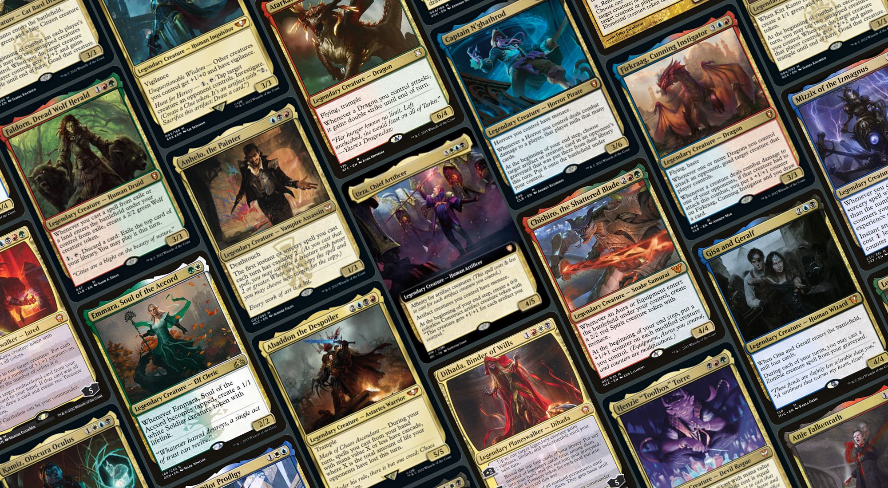

2022 preconstructed decks Power Level
A year in review - Power Level of all official EDH preconstructed decks released in 2022
I used my @edhrank Twitter bot to evaluate all official EDH preconstructed decks released by WotC until 2022.
⚠️ This campaign was done with the version edhrank_0.0.1-alpha.7.
ℹ️ @edhrank is publicly available and free to use. If you want to learn how to use it, follow this guide.
This year, 24 preconstructed decks were published! Here are the results, sorted alphabetically:
- Abaddon the Despoiler (here)
- Anhelo, the Painter (here)
- Atarka, World Render (here)
- Captain N'ghathrod (here)
- Chishiro, the Shattered Blade (here)
- Dihada, Binder of Wills (here)
- Emmara, Soul of the Accord (here)
- Faldorn, Dread Wolf Herald (here)
- Firkraag, Cunning Instigator (here)
- Gisa and Geralf (here)
- Henzie "Toolbox" Torre (here)
- Inquisitor Greyfax (here)
- Isperia, Supreme Judge (here)
- Jared Carthalion (here)
- Kamiz, Obscura Oculus (here)
- Kardur, Doomscourge (here)
- Kitt Kanto, Mayhem Diva (here)
- Kotori, Pilot Prodigy (here)
- Mishra, Eminent One (here)
- Nalia de'Arnise (here)
- Perrie, the Pulverizer (here)
- Szarekh, the Silent King (here)
- The Swarmlord (here)
- Urza, Chief Artificer (here)
A few observations
It's interesting to look at the results for 2022 preconstructed decks. Here are a few comments for each of the categories:
- Power — Evaulations are showing a lack of power for both the face commander and the decklist. This metric would benefit from a revamp in the way it's computed by @edhrank.
- Speed — Not the worst for preconstructed decks as only a few are lacking on this aspect. In general, there seem to be a decent amount of mana-producers and ramp or draw spells in the decklists.
- Control — This year's decklists are generally lacking interactions (counter spells, target removal or mass removal) which makes sense if they are supposed to be an introduction to the format.
- Consistency — This metric blends the combo potential as well as the number of tutors or draw spells to assemble them. The general low score for 2022 decklists clearly shows a lack on this aspect. This is not really a surprise as preconstructed decks are naturally leaning towards longer games.
Do you think there are any dimensions that would be worth exploring? Feel free to share any feedbacks.
Support me ❤️
If you want to support me or be kept up to date: